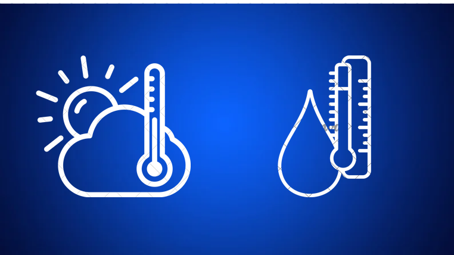
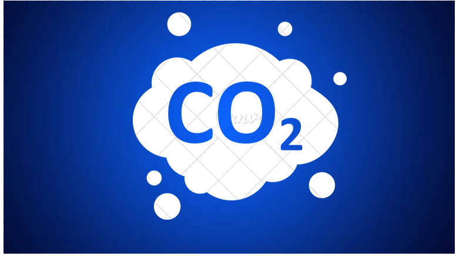

O monitoramento ambiental se beneficia da detecção de gases, pois ajuda a avaliar a qualidade do ar e identificar fontes de poluição, como emissões industriais e vazamentos químicos. Isso contribui para a proteção do meio ambiente e da saúde pública. A detecção de gases também é essencial para o controle de processos industriais, permitindo que as operações sejam conduzidas com segurança e eficiência. Ao monitorar gases que podem afetar a qualidade dos produtos ou a segurança dos trabalhadores, os riscos são minimizados. Setores industriais regulamentados utilizam a detecção de gases para cumprir normas ambientais, monitorando e controlando emissões de gases poluentes, minimizando assim o impacto negativo no meio ambiente. Aplicações médicas se beneficiam da detecção de gases em situações como unidades de cuidados intensivos e anestesia. Isso auxilia os profissionais de saúde a ajustar os tratamentos de forma segura. Em ambientes residenciais e comerciais, a detecção de gases, como gás natural, previne vazamentos que poderiam resultar em riscos graves, como incêndios e explosões.
 